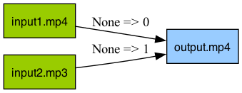
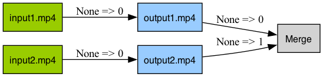
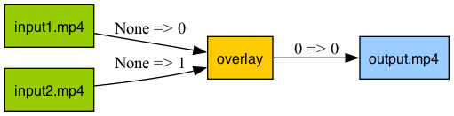
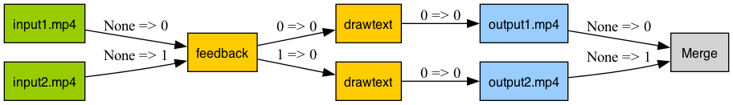

Basic API Usage for FFmpeg¶
Input¶
Creating a New Input Stream¶
To create a new input stream, use the ffmpeg.input function. This function is straightforward and initiates the stream from a specified file.
import ffmpeg
# Create a new input stream
input_stream = ffmpeg.input('input.mp4')
Adding Input Options¶
To specify additional options for the input stream, such as start time and duration, you can include them directly in the ffmpeg.input function.
import ffmpeg
# Create a new input stream with specific options
input_stream = ffmpeg.input('input.mp4', ss=10, t=20) # Start at 10 seconds and last for 20 seconds
Note
The ss option specifies the start time (in seconds), and the t option specifies the duration (in seconds) of the input stream. For more details, refer to the FFmpeg documentation.
Output¶
Creating a New Output Stream¶
To create a new output stream, use the ffmpeg.output function. This function is used to configure the output settings of the stream.
import ffmpeg
# Create a new output stream
ffmpeg.input("input.mp4").output(filename="output.mp4")
Specifying Output Options¶
You can specify various output options directly in the ffmpeg.output function, such as the start time and duration for the output file.
import ffmpeg
# Create and configure a new output stream
ffmpeg.input("input.mp4").output(filename="output.mp4", ss=10, t=20) # Output starting at 10 seconds with a duration of 20 seconds
You can also map multiple streams to a single output file.
import ffmpeg
# Define input streams
input1 = ffmpeg.input('input1.mp4')
input2 = ffmpeg.input('input2.mp3')
# Map multiple inputs to a single output
ffmpeg.output(input1, input2, filename="output.mp4")
Alternatively:
import ffmpeg
# Chain input and output operations
(
ffmpeg.input('input1.mp4')
.output(ffmpeg.input("input2.mp3"), filename="output.mp4")
)

Merging Outputs¶
FFmpeg allows processing multiple output files simultaneously. The Python FFmpeg wrapper supports this feature through the merge_outputs method.
import ffmpeg
# Define input streams
input1 = ffmpeg.input('input1.mp4')
input2 = ffmpeg.input('input2.mp4')
# Define output streams
output1 = input1.output(filename="output1.mp4")
output2 = input2.output(filename="output2.mp4")
# Merge the outputs into a single operation
ffmpeg.merge_outputs(output1, output2)
Alternatively:
import ffmpeg
# Chain operations for merging outputs
(
ffmpeg.input('input1.mp4')
.output(filename="output1.mp4")
.merge_outputs(
ffmpeg.input('input2.mp4')
.output(filename="output2.mp4")
)
)

Complex Filtering with FFmpeg¶
Introduction to FFmpeg's Filter System¶
FFmpeg's versatility and power largely stem from its comprehensive filter system, allowing for complex video and audio processing. The typed-ffmpeg library maintains this capability, providing a user-friendly interface for applying various filters.
Applying Basic Filters¶
Below is an example of how to trim a video and add a text watermark using FFmpeg's filter functions:
import ffmpeg
# Initialize the input stream from a video file
input_stream = ffmpeg.input('input.mp4')
# Apply trimming and drawtext filters, then output to a new file
(
input_stream
.trim(start=10, end=20)
.drawtext(text='Hello World', fontsize=12, x=10, y=10)
.output(filename="output.mp4")
)
This operation is visualized in the accompanying diagram, illustrating the workflow of trimming a video and adding a watermark.
Handling Stream Types with FFmpeg¶
Understanding Typed Filters in FFmpeg¶
FFmpeg classifies its filters based on the type of media stream they process: some are intended for video streams, while others are for audio streams. This type-specific approach ensures that each filter operates on the appropriate kind of data. The typed-ffmpeg library enforces this classification through both static type checking (compatible with tools like mypy) and runtime validation, minimizing errors and streamlining filter application.
Example: Applying Filters Correctly by Stream Type¶
Consider the following code where we initialize an input stream and apply different filters:
import ffmpeg
# Initialize an input stream from a video file
input1 = ffmpeg.input('input1.mp4') # The input stream here is an AVStream, capable of handling both audio and video operations.
# Apply a reverse filter, which is specifically a video filter, to the stream
video = input1.reverse() # The 'reverse' filter is applied, resulting in a VideoStream output.
# Attempting to apply an audio filter (amix) to a video stream results in an error
ffmpeg.filters.amix(video) # This line will raise an exception because 'amix' is an audio filter, incompatible with a VideoStream.
In this example, the reverse filter, which is designed for video streams, successfully transforms the input into a reversed video stream. However, when attempting to apply the amix filter, which is intended for audio streams, to the reversed video stream, the code will raise an exception. This error occurs because typed-ffmpeg recognizes the mismatch between the stream type (video) and the expected input type for the amix filter (audio).
By incorporating these type checks, typed-ffmpeg aids in preventing common mistakes, such as applying an audio filter to a video stream or vice versa, thereby ensuring that filters are applied correctly and efficiently.
Working with Multiple Inputs¶
Certain filters accept multiple inputs. When using such filters with typed-ffmpeg, ensure that the exact number of required streams is passed, as validated by static type checking:
import ffmpeg
# Initialize two input streams
input1 = ffmpeg.input('input1.mp4')
input2 = ffmpeg.input('input2.mp4')
# Overlay one stream over the other and output to a new file
(
input1
.overlay(input2, x=10, y=10)
.output(filename="output.mp4")
)
The process of overlaying two video streams is illustrated in the following diagram:

Handling Multiple Outputs¶
Some filters, when applied, generate multiple output streams. typed-ffmpeg facilitates handling these scenarios with clear and concise code:
import ffmpeg
# Initialize input streams
input1 = ffmpeg.input('input1.mp4')
input2 = ffmpeg.input('input2.mp4')
# Apply a filter that generates multiple outputs
video, feedout = input1.feedback(input2) # Generates two output streams
# Process and output each stream separately
o1 = video.drawtext(text='Hello World', fontsize=12, x=10, y=10).output(filename="output1.mp4")
o2 = feedout.drawtext(text='Hello World', fontsize=12, x=10, y=10).output(filename="output2.mp4")
# Merge the outputs
f = ffmpeg.merge_outputs(o1, o2)
The generation of multiple output streams from a single filter application is depicted below:

Dynamic Input Filters¶
Some filters accept a variable number of inputs. In these cases, typed-ffmpeg offers flexibility but requires careful input management:
import ffmpeg
# Correct usage with the expected number of inputs
input1 = ffmpeg.input('input1.mp4')
input2 = ffmpeg.input('input2.mp4')
f = ffmpeg.filters.amix(input1, input2, inputs=2)
Incorrect input numbers will trigger exceptions, providing immediate feedback without needing to execute FFmpeg:
import ffmpeg
# Incorrect usage leading to a ValueError
input1 = ffmpeg.input('input1.mp4')
input2 = ffmpeg.input('input2.mp4')
f = ffmpeg.filters.amix(input1, input2, inputs=3) # This will raise a ValueError
Dynamic Output Filters¶
Similarly, some filters yield a dynamic number of outputs. typed-ffmpeg ensures that any mismatches are quickly identified:
import ffmpeg
# Initialize input and apply a split filter
input1 = ffmpeg.input('input1.mp4')
split = input1.split(outputs=2)
# Correctly accessing the outputs
video0 = split.video(0)
video1 = split.video(1)
# Incorrectly accessing an out-of-range output will raise an error
video2 = split.video(2) # This will raise a ValueError
Customizing Filters in Typed-FFmpeg¶
Introduction to Custom Filters¶
While Typed-FFmpeg supports most of the FFmpeg filters out-of-the-box, there might be instances where you need to use filters that are not predefined in the library. For such cases, Typed-FFmpeg provides a flexible way to define and utilize custom filters.
Creating Single-input Custom Filters¶
Easily create your own single-input custom filters with the vfilter, afilter method. This allows for direct application of new or specialized video filters not standard in Typed-FFmpeg.
import ffmpeg
# Apply a custom single-input video filter
(
ffmpeg.input("input.mp4")
.vfilter(name="custom_filter", option1="value1", option2="value2") # Apply "custom_filter" with specified options
.output(filename="output.mp4")
)
This code snippet will correspond to the following FFmpeg command line:
ffmpeg -i input.mp4 -filter_complex '[0:v]custom_filter=option1=value1:option2=value2[v]' -map '[v]' output.mp4
Alternatively:
import ffmpeg
# Define a custom video filter for later use
custom_video_filter = ffmpeg.vfilter(
ffmpeg.input("input.mp4")
name="custom_video_filter",
option1="value1",
option2="value2"
)
Implementing Multi-input Custom Filters¶
For filters that require multiple inputs, specify the type of each input using the input_typings parameter to ensure correct stream handling.
import ffmpeg
from ffmpeg.schema import StreamType
# Create a multi-input custom video filter
(
ffmpeg.input("input1.mp4")
.vfilter(
ffmpeg.input("input2.mp4"),
name="custom_video_filter",
input_typings=(StreamType.video, StreamType.video),
)
)
Alternatively, use the vfilter, afilter function directly for multi-input scenarios:
import ffmpeg
from ffmpeg.schema import StreamType
# Define and apply a multi-input custom video filter
ffmpeg.vfilter(
ffmpeg.input("input1.mp4"),
ffmpeg.input("input2.mp4"),
name="custom_video_filter",
input_typings=(StreamType.video, StreamType.video),
)
Defining Multi-output Custom Filters¶
In cases where a filter generates multiple outputs, use ffmpeg.filter_multi_output function and specify the expected types of these outputs using the output_typings parameter. This feature is particularly useful for filters that split the input stream into several output streams.
import ffmpeg
from ffmpeg.schema import StreamType
# Create a custom filter that yields multiple outputs
filter_node = ffmpeg.filter_multi_output(
ffmpeg.input("input1.mp4"),
name="custom_split",
input_typings=(StreamType.video,),
output_typings=(StreamType.video, StreamType.video),
)
By following these guidelines, you can extend the functionality of Typed-FFmpeg to accommodate any specific filtering needs, ensuring maximum flexibility and efficiency in your video processing tasks.
Execute¶
Once you have defined your FFmpeg processing pipeline in Typed-FFmpeg, executing the command or inspecting the underlying FFmpeg command is straightforward. This section covers how to run your FFmpeg tasks programmatically and how to retrieve the command line equivalent for debugging or educational purposes.
import ffmpeg
# Define the FFmpeg command with filters and output
input_stream = ffmpeg.input('input.mp4')
f = (
input_stream
.trim(start=10, end=20)
.drawtext(text='Hello World', fontsize=12, x=10, y=10)
.output(filename="output.mp4")
)
# Execute the FFmpeg command
f.run()
Retrieving the Command Line¶
For debugging or verification purposes, you might want to inspect the exact command line that Typed-FFmpeg will execute. This can be done using the .compile() or .command_line() methods. These methods are especially useful for understanding how Typed-FFmpeg translates your Python code into FFmpeg command-line arguments.
# Compile the FFmpeg command into a list format
command_list = f.compile()
print(command_list)
# Outputs: ['ffmpeg', '-i', 'input.mp4', '-filter_complex', '[0:v]trim=start=10:end=20,drawtext=text=Hello World:fontsize=12:x=10:y=10', '-map', '0:v', 'output.mp4']
# Alternatively, get the command line as a single string
command_string = f.command_line()
print(command_string)
# Outputs: ffmpeg -i input.mp4 -filter_complex '[0:v]trim=start=10:end=20,drawtext=text=Hello World:fontsize=12:x=10:y=10' -map '0:v' output.mp4
These methods are primarily intended for debugging and ensuring that the Typed-FFmpeg commands align with your expectations.
Visualizing the Command¶
Typed-FFmpeg also offers a method to visualize your filter graph, which can help in understanding the flow and structure of your FFmpeg command. This is particularly helpful when dealing with complex filter chains or multi-stream workflows.
# Visualize the FFmpeg filter graph
f.view()
By following these steps, you can effectively execute, debug, and visualize your video and audio processing tasks within the Typed-FFmpeg framework.
Validate & Auto Fix with Typed-FFmpeg¶
Typed-FFmpeg introduces an advanced feature for validating and automatically correcting your FFmpeg commands. This functionality is invaluable for ensuring that your commands are not only syntactically correct but also adhere to FFmpeg's operational requirements, which can sometimes be non-intuitive and lead to user confusion.
Resolving Missing Split Filters¶
A common issue in FFmpeg commands is the improper reuse of filtered streams without a split. FFmpeg requires distinct stream references when a stream is used in multiple contexts. Typed-FFmpeg can automatically insert necessary split filters to rectify this.
Example of a Missing Split Filter Issue:
from ffmpeg import input
from ffmpeg.filters import concat
# Define a problematic FFmpeg graph without the required split
input_stream = input("input.mp4")
stream = input_stream.reverse()
graph = concat(stream, stream).video(0).output(filename="tmp.mp4")
# Attempt to compile the command without auto-fixing
graph.compile_line(auto_fix=False)
# Incorrect command: ffmpeg -i input.mp4 -filter_complex '[0:v]reverse[r];[r][r]concat[c]' -map '[c]' tmp.mp4
# Automatically fix and compile the command
graph.compile_line()
# Corrected command: ffmpeg -i input.mp4 -filter_complex '[0:v]reverse[r];[r]split=2[s1][s2];[s1][s2]concat[c]' -map '[c]' tmp.mp4
In this case, Typed-FFmpeg intelligently adds a split filter to meet FFmpeg's requirements for stream usage.
Eliminating Redundant Split Filters¶
Conversely, unnecessary split filters can also introduce problems, such as unintended stream selections or inefficient processing. Typed-FFmpeg can identify and remove these redundant filters, streamlining your command.
Example of Redundant Split Filter Issue:
from ffmpeg import input
# Set up an FFmpeg graph with a redundant split
input1 = input("input1.mp4")
f = (
input1
.split(outputs=2)
.video(0)
.trim(end=5)
.output(filename="tmp.mp4")
)
# Compile the command with the redundant split, without auto-fixing
f.compile_line(auto_fix=False)
# Inefficient command: ffmpeg -i input1.mp4 -filter_complex '[0:v]split=2[s0][s1];[s0]trim=end=5[t]' -map '[t]' tmp.mp4
# Auto-remove the redundant split and compile
f.compile_line()
# Optimized command: ffmpeg -i input1.mp4 -filter_complex '[0:v]trim=end=5[t]' -map '[t]' tmp.mp4
In this example, Typed-FFmpeg eliminates the unnecessary split, thereby simplifying the command and potentially improving processing efficiency.
Conclusion¶
Typed-FFmpeg's validation and auto-fixing capabilities greatly enhance the user experience by automating the resolution of common issues and optimizing command structure. This ensures that users can focus more on their creative and technical goals rather than on navigating the intricacies of FFmpeg's syntax and stream management rules.